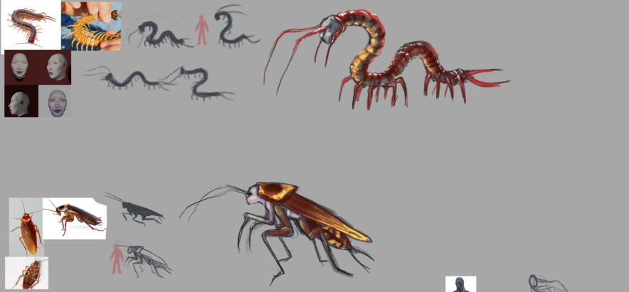
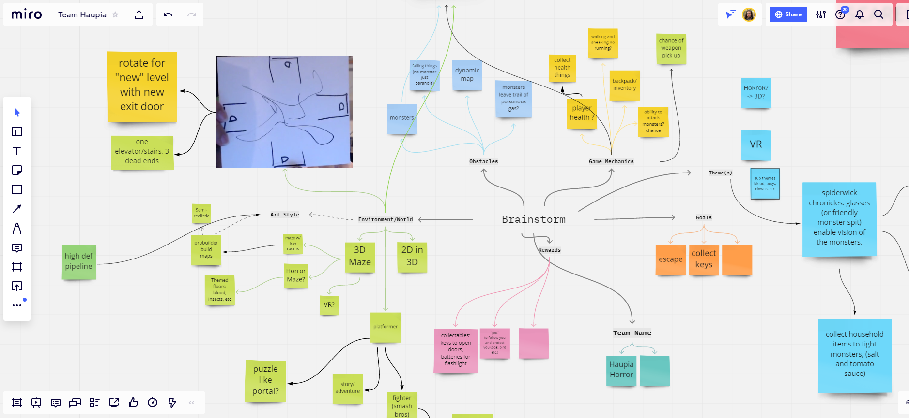

March 9, 2021
Visual Development
This past week our team decided to narrow down our idea and work on refining one level (Bug Floor). It was also the week to start visual development through reference collection and creature designing in which one solidified design was modeled, textured, and rigged in Maya. This gave us a better understanding of the time it takes for a character asset to be fleshed out in order to determine how many more we'd like to add. For the next few days vis dev will continue with completing designs for at least one more bug monster and environment design.

February 22, 2021